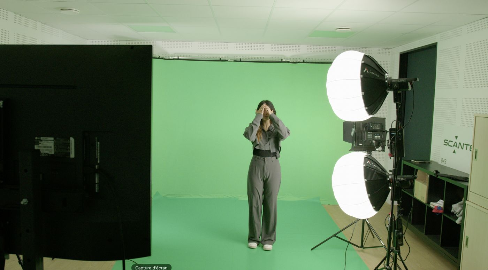

VIDÉO FOND VERT

Tournage réalisé avec 2 caméras Blackmagic et 4 spots de lumière (2 Aputure 120D avec softbox Lantern et 2 panneaux Nanlite MixPanel 150). Un ATEM était utilisé en régie pour visualiser le retour dans le décor final en temps réel pendant le tournage. Montage sur DaVinci Resolve.
Photos du plateau et vidéos finales avec incrustation du décor.